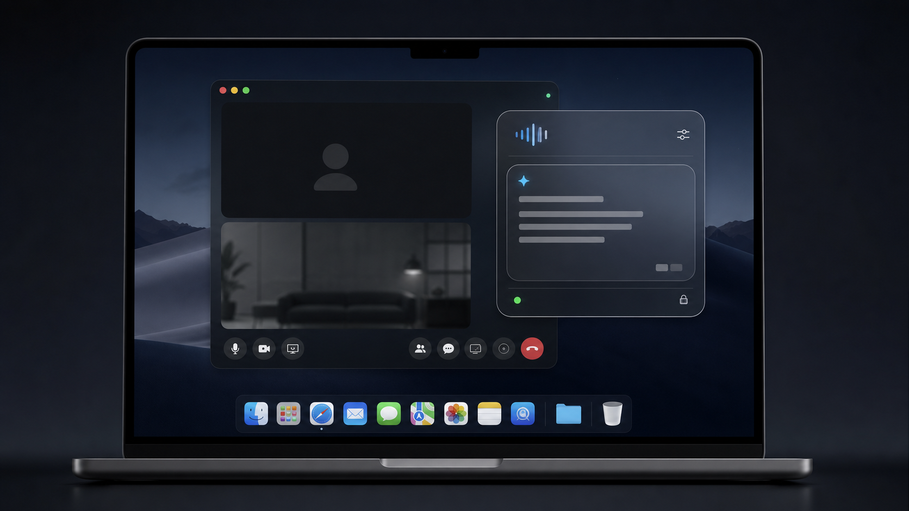

Real-time listening
Turn the interviewer's question into clean context as the call moves.
Private AI copilot for live interviews
MacOverlay floats above your call, listens in real time, and drafts concise answers you can say out loud.
macOS 13+ · Native Swift · Bring your own AI key

Interactive macOS preview
Open apps from the Dock, drag the glass windows, change overlay settings, type a prompt, start the call, and see how MacOverlay stays above everything.
Designed for screen share
MacOverlay uses a native macOS panel configured to stay out of screen capture, so your assistant can sit beside the conversation without appearing in the shared window.
Built for live pressure
Turn the interviewer's question into clean context as the call moves.
Get a direct opening sentence and short supporting points, not a wall of text.
Add your resume, job description, notes, or prompt preset before you start.
Let MacOverlay answer on pauses, or send the current transcript yourself.
Native to Mac
Keep help visible over meetings, browsers, IDEs, and presentations.
Collapse to a compact pill, then expand into the answer surface instantly.
Start, stop, send, capture, and move the overlay without breaking flow.
Ready for your next call